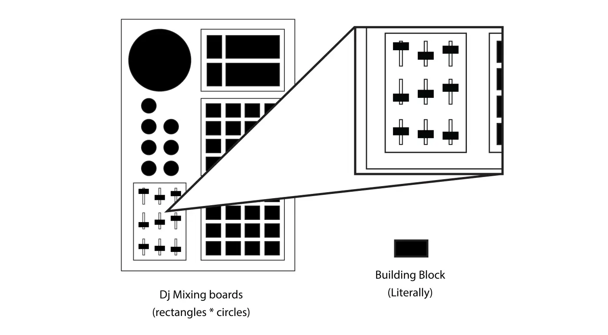
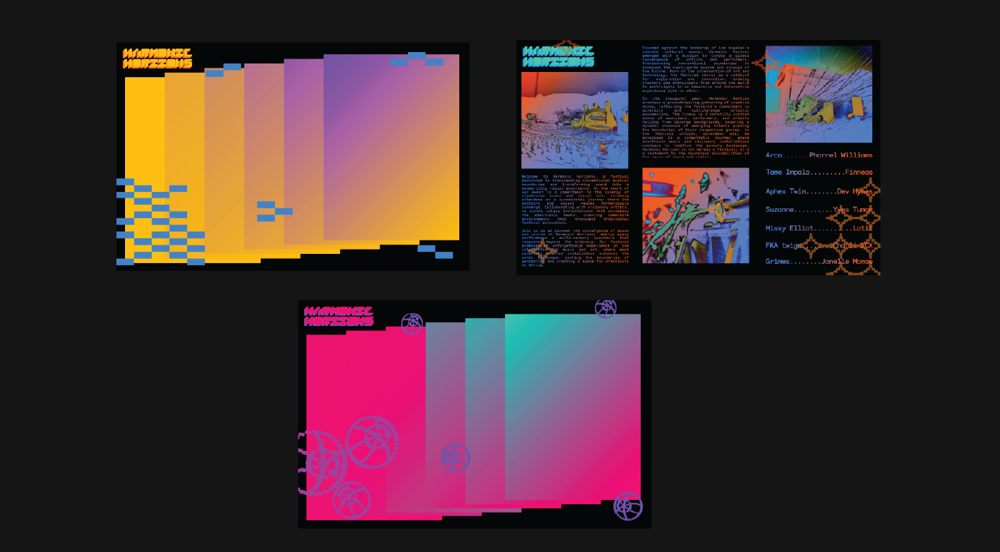
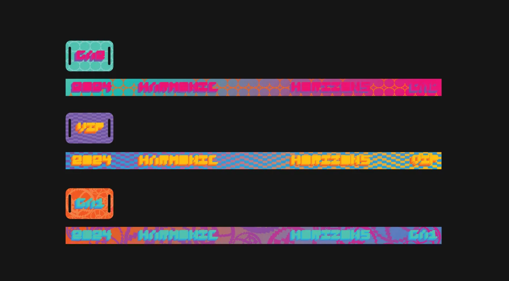
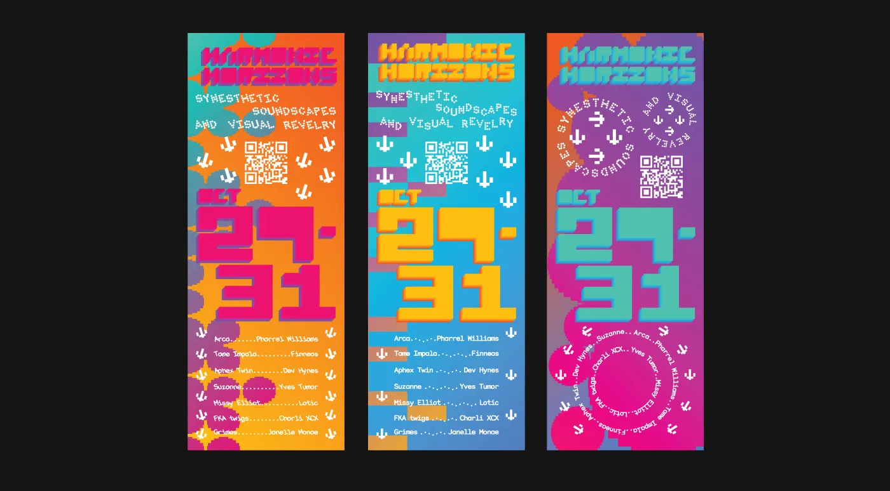

Harmonic Horizons Festival
An open-ended brief to create a brand identity for a festival. I chose a music festival and took it somewhere festival branding doesn't usually go — instead of leading with sound the way it almost always does, I wanted to give equal weight to all three senses the experience actually engages: sight, hearing, and touch.
Problem
Festival branding is almost always auditory-led. Giving equal emphasis to all three senses and finding a way to translate something as immaterial as sound into something you could actually see and feel was the core challenge. It was also my first time doing festival branding, so figuring out how a system works at that scale was something I had to learn in real time.
Design Intent
The visual language came straight from scientific diagrams — neural networks, ear maps, sound waves — and got translated into patterns, color palettes, and type treatments that each correspond to a different sense. The 2-bit type style was a nod to electronic music's digital roots and the way tracks actually look on a timeline in FL Studio. Nothing in the system was decorative — every texture, frequency shape, and color had a job.


Process
Full scope from concept to final applications — visual system, identity, typography, print production, posters, billboards, brochure and map, lanyards, social posts, and packaging. One semester.
Sketching Symbolism Research Iterative Design Material Research Print



Outcome
This project was the first time I really had to think in systems and at scale. Festival design operates differently from a regular branding project, and figuring that out changed how I approach large scale projects.



